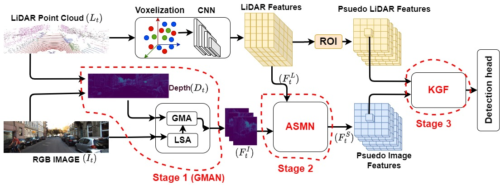
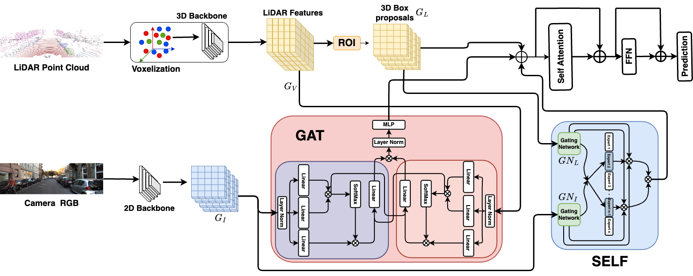

Sanjay Bhargav
I'm a research fellow at Center for Visual Information lab (CVIT), International Institute of Information Technology Hyderabad(IIITH) under the supervision of Prof. C.V. Jawahar and Dr. Zakaria Laskar. I am currently researching the topic of implicit 3D scene representation and rendering. I am also interested in computer graphics, geometric computer vision, generative AI. I completed my Integrated Masters (5 Years) in physics from Indian Institute of Technology, Kharagpur, India.
I was a research intern at Saab-NTU joint lab singapore, where I worked on the topic of 3D object detection and tracking using LiDAR and camera sensors.
For any inquiries, feel free to reach out to me via mail!
CV Mail Scholar Github LinkedIn
Publications

Tanmoy Dam, Sanjay Dharavath, Sameer Alam, Nimrod Lilith, Aniruddha Maiti, Supriyo Chakraborty, Mir Feroskhan
2025 IEEE International Conference on Robotics and Automation (ICRA), 2025
Project Page / Paper /
@InProceedings{11128252,
author = {Tanmoy Dam and Sanjay Dharavath and Sameer Alam and Nimrod Lilith and Aniruddha Maiti and Supriyo Chakraborty and Mir Feroskhan},
title = {SaViD: Spectravista Aesthetic Vision Integration for Robust and Discerning 3D Object Detection in Challenging Environments},
booktitle = {2025 IEEE International Conference on Robotics and Automation (ICRA)},
year = {2025},
}
Tanmoy Dam, Sanjay Dharavath, Sameer Alam, Nimrod Lilith, Supriyo Chakraborty, Mir Feroskhan
2024 IEEE International Conference on Robotics and Automation (ICRA), 2024
Project Page / Paper /
@InProceedings{10610908,
author = {Tanmoy Dam and Sanjay Dharavath and Sameer Alam and Nimrod Lilith and Supriyo Chakraborty and Mir Feroskhan},
title = {AYDIV: Adaptable Yielding 3D Object Detection via Integrated Contextual Vision Transformer},
booktitle = {2024 IEEE International Conference on Robotics and Automation (ICRA)},
year = {2024},
}
Sanjay Dharavath, Tanmoy Dam, Supriyo Chakraborty, Prithwiraj Roy, Aniruddha Maiti
Proceedings of the 33rd ACM International Conference on Information and Knowledge Management, 2024
Project Page / Paper /
@InProceedings{10.1145/3627673.3679984,
author = {Sanjay Dharavath and Tanmoy Dam and Supriyo Chakraborty and Prithwiraj Roy and Aniruddha Maiti},
title = {Quantum Inverse Contextual Vision Transformers (Q-ICVT): A New Frontier in 3D Object Detection for AVs},
booktitle = {Proceedings of the 33rd ACM International Conference on Information and Knowledge Management},
year = {2024},
}Talks
Template
This page is based on the template of Michael Niemeyer. Checkout his GitHub repository for instructions on how to use it.